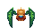

Full name : Aerav Molren Kyris
Origin : Decruturn, Grolutera
Date of Birth : 6th of October, 2158
Bio : Born into a poor family, on the outskirts of Decruturn, young Aerav found a new fight to get into every day. He spent the days outside, kicking dirt and playing with his friends. When the night came, he watched the planets and dreamt of being among them, at the length of an arm, a touch away from the brightest stars. Childhood years passed and he enrolled in the ISTA program for the “Conqueror” missions. Several years of training and hard work passed until he got his chance for the 5th mission, and up he went into the sky on “Conqueror V”, oblivious to the things that awaited him out there…
Full name : Anatole Zionotos
Origin : Retrobazn, Grolutera
Date of Birth : 24th of January, 2095
Bio : Since he was a child, Anatole Zionotos was the most intelligent kid around. With a decent family, he completed all his studies and benefited from a good environment. His parents both academicians, young Anatole learnt the way of the numbers and developed a passion for Physics and Astronomy. While at the College of Astronomic Studies in Retrobazn, Zionotos attended a conference held by ISTA scientist and decided to apply for a scholarship. His results were so good that he was directly accepted into the research team and moved up the ranks astonishingly quick. Up until his death, the Dr. devoted his whole time to the study of the planets and their interactions.
Specific name : Megalus Crabeus
Height : 2 – 2,5 metres
Weight : not determined
Description : Huge crab-like creatures with chitinous body. Their carapace is too hard for bullets or blunt force to penetrate. Soft spots represented by their “face” area, where the shell is missing almost entirely. Mobility is somewhat limited. It appears slow but can dash in one direction with great speed and crash into enemies. Maneuvers are extremely limited while dashing. It has not been seen jumping as of present date. Arms are represented by two chitinous pincers, which it can use slash or tear flesh effectively, while also protecting itself from damage. Recommended distance for engage is approximately 20 metres.
Specific name : Arachne Ascendeum
Height : 20 – 30 centimeters
Weight : approximately 10 kilograms, may vary for each individual
Description : These small but nimble creature are extremely mobile and one should not be fooled by their appearance. Jumpers possess two muscular legs and are capable of jumping several meters into the air with ease, hence their name. The creatures have very sharp teeth, able to tear away battle suits in an instant. The only known weakness is that they are relatively fragile, unlike Crabs. They travel alone, but should be approached with extreme caution, whatever the situation.
Specific name : Leviterum Decapodiformes
Height : approximately 50 centimeters, may vary
Weight : not determined
Description : Having been linked to the appearance of Grolutera squids, these monsters have been named in the same way. However, their behavior is entirely different from their distant doppelgangers. Squids do not dwell in the water, but rather in the air, as their main ability is to levitate. They are relatively soft-tissued and fragile, but they are completely aware of it. Squids often position themselves outside of danger until help can arrive, or until the threat is gone. Notably, they seem to be perfectly coordinated and they travel in packs, but the explanation is yet to be determined.